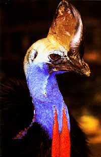

 |
The Cassowary is a
large
flightless
bird. It can grow to almost two metres in height (over 6
feet) and can
weigh up to
60kgs
(130lbs).
The Cassowary has strong powerful legs with dagger-like claws on its toes. It defends itself by kicking. Its kick is powerful enough to rip open a person's stomach or even kill the person. The Cassowary lives in low swamplands and rainforests of northern Australia. They are shy solitary animals. They eat fruit which has fallen on the rainforest floor, insects, frogs, snakes and small animals. The female Cassowary lays a clutch
of
four to
ten eggs . The male Cassowary incubates the eggs.
|
|
|
|
|